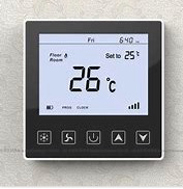
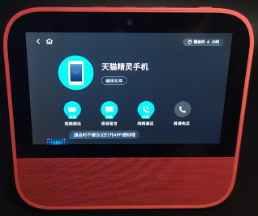
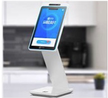
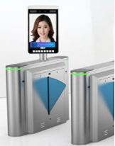

This specification describes the use cases of MiniApp for IoT. Derived from the use cases, this specification defines the architecture of MiniApp for IoT. How to reuse and extend the MiniApp Packaging and MiniApp Lifecycle is specified. Also, several APIs are specified for MiniApp APIs for IoT.
Background
MiniApp is a new format of mobile application, a hybrid solution which relies on Web technologies (especially CSS and Javascript) but also integrates with Native capabilities. Currently, MiniApps have mature deployments in cellphone and PC.
IoT device is becoming another carrier running MiniApps. MiniApp for IoT intends to enable interoperability across multiple IoT device platforms and IoT operating systems. Rather than having to deal with the difference across the multiple IoT device platforms and IoT operating systems, by introducing MiniApps for IoT, developers only need to focus on the application development on IoT device.
MiniApp for IoT shares similar architecture of MiniApp running on the cellphone and PC. But since IoT device has different hardware capabilities, MiniApp for IoT has its unique features.
The purpose of this specification is to provide:
a set of use cases of MiniApp for IoT
a definition of MiniApp for IoT Architecture
a definition of MiniApp Packaging for IoT
a definition of MiniApp Lifecycle for IoT
an overview of MiniApp APIs for IoT
Use Cases
This section presents the use cases targeted by MiniApp for IoT and which are used to derive the MiniApp Packaging for IoT, MiniApp Lifecycle for IoT, and MiniApp APIs for IoT.
The following sections are not exhaustive. Rather they serve as illustrations, where MiniApp for IoT can provide additional benefit or enable new scenarios.
Switch panel
The HVAC (heating, ventilating, and air-conditioning) applications and lighting applications are usually deployed in homes and buildings, to manage the indoor environment. A switch panel is used to control the HVAC application and lighting application.
Figure 1 shows an example of HVAC application switch panel which has a screen and several physical buttons. In this case, by introducing MiniApp for IoT, the switch panel’s screen UI can be designed and developed using Web technologies, to display the HVAC information. For example, the target temperature value inputted by the physical and the measured real-time temperature value can be displayed.

HVAC application switch panel having a screen and several physical buttons
Figure 2 shows an example of HAVC and lighting application switch panel which has a touch screen. In this case, by introducing MiniApp for IoT, the switch panel’s touch screen UI can be designed and developed using Web technologies, to both display information and control the indoor HAVC and lighting application. For example, information like measured real-time temperature value, current date and time, etc., can be displayed in one MiniApp page. Besides, by clicking the virtual button on the touch screen, it can navigate to another MiniApp page to configure and control the HAV and lighting application, like setting the target temperature, turn on or off the lights, etc.
HVAC and lighting application switch panel having a touch screen
Gateway
In smart home scenarios, gateways are connected to local IoT devices such as sensors, cameras and home appliances through corresponding local communication protocols such as Wi-Fi, Bluetooth Mesh, Zigbee, etc. At the same time, gateways can be connected to the cloud through the Internet. Usually, the gateways do not have a screen.
In this case, by introducing MiniApp for IoT to gateway, the local device connection functionality (such as to establish connection between gateway and IoT device using Wi-Fi, Bluetooth Mesh or Zigbee) and cloud connection functionality (such as to establish connection between gateway and cloud using MQTT or HTTP) can be designed and developed using Web technologies.
Smart Speaker
Smart speaker is a very popular appliance in smart home scenario. Users can interact with the smart speaker either through voice commands or through the touch screen on the smart speaker. Users can ask smart speakers to play music and video, to control the IoT devices at home, to do on online shopping through the touch screen.
Figure 3 shows an example of smart speaker with a touch screen. In this case, by introducing MiniApp for IoT, the smart speaker’s touch screen UI can be designed and developed using Web technologies, to play music and video, to control the IoT devices at home, to do on online shopping.

Smart speaker having a touch screen
Checkout Pad
A checkout pad is a machine deployed in the checkout desk in shopping store, café, and supermarket. On the checkout pad, customers can check the items and price, and also make the payment through face payment or barcode payment.
Figure 4 shows an example of checkout pad with a screen and a camera. In this case, by introducing MiniApp for IoT, the checkout pad’s screen UI and camera can be developed using Web technologies, to display the items and price information, to display the barcode for customers to make the payment, and to scan the customer’s face to complete the face payment by the camera on the checkout pad.

Checkout pad having a screen and a camera
Video conference terminal
A video conference terminal is used to set up video/audio conference call.
Figure 5 shows an example of video conference terminal which has a touch screen. In this case, by introducing MiniApp for IoT, the video conference terminal’s touch screen UI can be designed and developed using Web technologies, for users to configure and establish the video/audio conference call.
Video conference terminal having a touch screen
Face recognition terminal for access control
A face recognition terminal for access control is used to provide employees with quick and convenient access to the workplace while preventing fraud.
Figure 6 shows an example of face recognition terminal for access control with a screen and a camera. In this case, by introducing MiniApp for IoT, the face recognition terminal’s screen UI and camera can be developed using Web technologies, to scan the employee’s face and display on the screen, and to complete the employee identification.

Face recognition terminal for access control having a screen and a camera
MiniApp for IoT Architecture
To address the use cases in Section 2, this section provides the MiniApp for IoT Architecture.
Unlike MiniApps running on cellphone, which either run on top of a certain mobile App or run on top of mobile OS, MiniApp for IoT is running on top of IoT OS (operating system).
Similar as MiniApps running on cellphone, in MiniApp for IoT, the View layer is usually separated from the Logic layer. The View layer is responsible for rendering MiniApp pages, including Web rendering and Native rendering. The Logic layer is responsible for MiniApp’s event processing, API calling and lifecycle management.
MiniApp for IoT also have the Packaging and Lifecycle, which will be described in Section 4 and Section 5.
One of the key features of MiniApp for IoT is that it deals with many IoT device native functionalities, including but not limited to IoT communication protocols (like MQTT, Bluetooth Mesh) management, I/O for peripheral (like, UART, GPIO, I2C, SPI), and hardware functionalities (like ADC, DAC, hardware timer). The details will be described in Section 6.
MiniApp Packaging for IoT
MiniApp Packaging for IoT device with a screen
The use cases in Section 2.1, 2.3, 2.4, 2.5 and 2.6 show the MiniApp for IoT device with a screen, which is similar to the MiniApp running on cellphone or PC.
Therefore, the MiniApp Packaging can be applied for MiniApp packaging for IoT device with a screen.
MiniApp Packaging for IoT device without a screen
The use case in Section 2.2 shows the MiniApp for IoT device without a screen.
Therefore, a simplified MiniApp Packaging’s directory and file system is defined to be applied for IoT device without a screen. Specifically, the CSS Resources are not required.
MiniApp Lifecycle for IoT
MiniApp Lifecycle needs to be extended for MiniApp lifecycle for IoT.
MiniApp for cellphone either runs in foreground or background. When running in foreground, the MiniApp is shown to users. When user chooses to close the MiniApp by clicking the close button on MiniApp, or go to the mobile phone’s home screen, the MiniApp switches to run in background, which means the MiniApp is suspended in the background.
However, in the case of MiniApp for IoT, when user chooses to close the MiniApp by clicking the close button on MiniApp, or go to the home screen, some MiniApps will still provide services to users and will not be suspended, like music playing. Therefore, a new lifecycle event and states need to be defined.
Lifecycle state for MiniApp [=Document/running permanently=]. This means the MiniApp is running permanently, even though user clicks the close button on MiniApp, or go to the home screen.
MiniApp Page Lifecycle States is extended to include one new page lifecycle state for MiniApp for IoT: page permanent.
page permanent
Lifecycle state for MiniApp [=Document/page running permanently=]. This means the MiniApp page is running permanently, even though user clicks the close button on MiniApp, or go to the home screen.
To interact with IoT device native capabilities, a set of APIs need to be defined for MiniApp for IoT.
MQTT API
The MQTT API provides interfaces that MiniApp for IoT can access, configure and control MQTT protocol in the underlying IoT device, so that the IoT device can transfer data with another entity (such as another device, or backend server) through MQTT protocol.
Bluetooth Mesh API
The Bluetooth Mesh API provides interfaces that MiniApp for IoT can access, configure and control Bluetooth Mesh connection in the underlying IoT device, so that the IoT device can establish Bluetooth Mesh connection with another device.
UART (universal asynchronous receiver-transmitter) API
The UART API provides interfaces that MiniApp for IoT can access UART embedded in the underlying devices.
SPI (serial peripheral interface) API
The SPI API provides interfaces that MiniApp for IoT can access devices via SPI interfaces embedded in the underlying devices.
GPIO (general-purpose input/output) API
The GPIO API provides interfaces that MiniApp for IoT can access GPIO embedded in the underlying devices.
I2C (inter-integrated circuit) API
The I2C API provides interfaces that MiniApp for IoT can access devices via I2C interfaces embedded in the underlying devices.
Device low power management API
The Device low power management API provides interfaces that MiniApp for IoT can access and configure low power management functionality in the underlying IoT device.
ADC (analog-to-digital converter) API
The ADC API provides interfaces that MiniApp for IoT can access ADC embedded in the underlying devices.
DAC (digital-to-analog converter) API
The DAC API provides interfaces that MiniApp for IoT can access DAC embedded in the underlying devices.
Hardware timer API
The Hardware timer API provides interfaces that MiniApp for IoT can access Hardware timer embedded in the underlying devices.